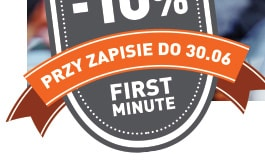

|
||
|
Nowo¶æ na rynku edukacyjnym - studia podyplomowe Neuro-Przywództwo |
||
| Kierunek jest adresowany do osób zarz±dzaj±cych zespo³ami, prowadz±cych oraz chc±cych rozwijaæ w³asn± dzia³alno¶æ biznesow±. To te¿ interesuj±ca propozycja dla wszystkich otwartych na w³asny rozwój osobisty i zawodowy. |  | |
| Atuty studiów: |
| jedyne na polskim rynku studia z Neuro-Przywództwa aplikuj±ce najnowsze odkrycia w badaniach nad mózgiem do zarz±dzania, marketingu i sprzeda¿y | |||
| zajêcia z praktykami nastawione na przekazanie sprawdzonych i skutecznych rozwi±zañ dla biznesu | |||
| 4 miêdzynarodowe certyfikaty STRUCTOGRAM uznawane w 21 krajach na ¶wiecie (Klucz do poznania siebie, Klucz do poznania innych, Klucz do poznania klienta, Klucz do poznania wspó³pracownika) | |||
|
Chêtnie odpowiemy na Pañstwa pytania tel. 22 54 35 322, e-mail ckp@lazarski.edu.pl Centrum Kszta³cenia Podyplomowego Uczelnia £azarskiego ul. ¦wieradowska 43, 02-622 Warszawa. Skontaktuj siê z nami! |
|